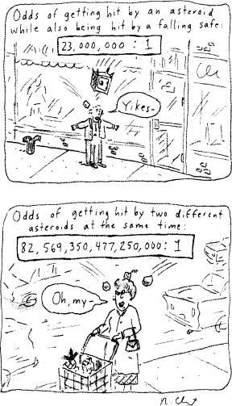

Some people are born to biology. You can spot them instantly as kids—they’re the ones comfortably lugging around the toy microscopes, dissecting some dead animal on the dining room table, being ostracized at school for their obsession with geckos.* But all sorts of folks migrate to biology from other fields—chemists, psychologists, physicists, mathematicians.
Some people are born to biology. You can spot them instantly as kids—they’re the ones comfortably lugging around the toy microscopes, dissecting some dead animal on the dining room table, being ostracized at school for their obsession with geckos.* But all sorts of folks migrate to biology from other fields—chemists, psychologists, physicists, mathematicians.
Several decades after stress physiology began, the discipline was inundated by people who had spent their formative years as engineers. Like physiologists, they thought there was a ferocious logic to how the body worked, but for bioengineers, that tended to mean viewing the body a bit like the circuitry diagram that you get with a radio: input-output ratios, impedance, feedback loops, servomechanisms. I shudder even to write such words, as I barely understand them; but the bioengineers did wonders for the field, adding a tremendous vigor.
Suppose you wonder how the brain knows when to stop glucocorticoid secretion—when enough is enough. In a vague sort of way, everyone knew that somehow the brain must be able to measure the amount of glucocorticoids in the circulation, compare that to some desired set point, and then decide whether to continue secreting CRH or turn off the faucet (returning to the toilet tank model). The bioengineers came in and showed that the process was vastly more interesting and complicated than anyone had imagined. There are “multiple feedback domains” some of the time the brain measures the quantity of glucocorticoids in the bloodstream, and sometimes the rate at which the level is changing. The bioengineers solved another critical issue: Is the stress-response linear or all-or-nothing? Epinephrine, glucocorticoids, prolactin, and other substances are all secreted during stress; but are they secreted to the same extent regardless of the intensity of the stressor (all-or-nothing responsiveness)? The system turns out to be incredibly sensitive to the size of the stressor, demonstrating a linear relationship between, for example, the extent of the drop in blood pressure and the extent of epinephrine secretion, between the degree of hypoglycemia (drop in blood sugar) and glucagon release. The body not only can sense something stressful, but it also is amazingly accurate at measuring just how far and how fast that stressor is throwing the body out of allostatic balance.
Beautiful stuff, and important. Hans Selye loved the bioengineers, which makes perfect sense, since in his time the whole stress field must have still seemed a bit soft-headed to some mainstream physiologists. Those physiologists knew that the body does one set of things when it is too cold, and a diametrically opposite set when it is too hot, but here were Selye and his crew insisting that there were physiological mechanisms that respond equally to cold and hot? And to injury and hypoglycemia and hypotension? The beleaguered stress experts welcomed the bioengineers with open arms. “You see, it’s for real; you can do math about stress, construct flow charts, feedback loops, formulas….” Golden days for the business. If the system was turning out to be far more complicated than ever anticipated, it was complicated in a way that was precise, logical, mechanistic. Soon it would be possible to model the body as one big input-output relationship: you tell me exactly to what degree a stressor impinges on an organism (how much it disrupts the allostasis of blood sugar, fluid volume, optimal temperature, and so on), and I’ll tell you exactly how much of a stress-response will occur.
This approach, fine for most of the ground that we’ve covered up until now, will probably allow us to estimate quite accurately what the pancreas of that zebra is doing when the organism is sprinting from a lion. But the approach is not going to tell us which of us will get an ulcer when the factory closes down. Starting in the late 1950s, a new style of experiments in stress physiology began to be conducted that burst that lucid, mechanistic bioengineering bubble. A single example will suffice. An organism is subjected to a painful stimulus, and you are interested in how great a stress-response will be triggered. The bioengineers had been all over that one, mapping the relationship between the intensity and duration of the stimulus and the response. But this time, when the painful stimulus occurs, the organism under study can reach out for its mommy and cry in her arms. Under these circumstances, this organism shows less of a stress-response.
Nothing in that clean, mechanistic world of the bioengineers could explain this phenomenon. The input was still the same; the same number of pain receptors should have been firing while the child underwent some painful procedure. Yet the output was completely different. A critical realization roared through the research community: the physiological stress-response can be modulated by psychological factors. Two identical stressors with the same extent of allostatic disruption can be perceived, can be appraised differently, and the whole show changes from there.
Suddenly the stress-response could be made bigger or smaller, depending on psychological factors. In other words, psychological variables could modulate the stress-response. Inevitably, the next step was demonstrated: in the absence of any change in physiological reality—any actual disruption of allostasis—psychological variables alone could trigger the stress-response. Flushed with excitement, Yale physiologist John Mason, one of the leaders in this approach, even went so far as to proclaim that all stress-responses were psychological stress-responses.
The old guard was not amused. Just when the conception of stress was becoming systematized, rigorous, credible, along came this rabble of psychologists muddying up the picture. In a series of published exchanges in which they first praised each other’s achievements and ancestors, Selye and Mason attempted to shred each other’s work. Mason smugly pointed to the growing literature on psychological initiation and modulation of the stress-response. Selye, facing defeat, insisted that all stress-responses couldn’t be psychological and perceptual: if an organism is anesthetized, it still gets a stress-response when a surgical incision is made.
The psychologists succeeded in getting a place at the table, and as they have acquired some table manners and a few gray hairs, they have been treated less like barbarians. We now have to consider which psychological variables are critical. Why is psychological stress stressful?
The Building Blocks of
Psychological Stressors
Outlets for frustration You would expect key psychological variables to be mushy concepts to uncover, but in a series of elegant experiments, the physiologist Jay Weiss, then at Rockefeller University, demonstrated exactly what is involved. The subject of one experiment is a rat that receives mild electric shocks (roughly equivalent to the static shock you might get from scuffing your foot on a carpet). Over a series of these, the rat develops a prolonged stress-response: its heart rate and glucocorticoid secretion rate go up, for example. For convenience, we can express the long-term consequences by how likely the rat is to get an ulcer, and in this situation, the probability soars. In the next room, a different rat gets the same series of shocks—identical pattern and intensity; its allostatic balance is challenged to exactly the same extent. But this time, whenever the rat gets a shock, it can run over to a bar of wood and gnaw on it. The rat in this situation is far less likely to get an ulcer. You have given it an outlet for frustration. Other types of outlets work as well—let the stressed rat eat something, drink water, or sprint on a running wheel, and it is less likely to develop an ulcer.
We humans also deal better with stressors when we have outlets for frustration—punch a wall, take a run, find solace in a hobby. We are even cerebral enough to imagine those outlets and derive some relief: consider the prisoner of war who spends hours imagining a golf game in tremendous detail. I have a friend who passed a prolonged and very stressful illness lying in bed with a mechanical pencil and a notepad, drawing topographic maps of imaginary mountain ranges and taking hikes through them.
A central feature of an outlet being effective is if it distracts from the stressor. But, obviously, more important is that it also be something positive for you—a reminder that there is more to life than whatever is making you crazed and stressed at the time. The frustration-reducing effects of exercise provide an additional layer of benefit, one harking back to my dichotomy, repeated ad nauseam, between the zebra running for its life and the psychologically stressed human. The stress-response is about preparing your body for an explosive burst of energy consumption right now; psychological stress is about doing all the same things to your body for no physical reason whatsoever. Exercise finally provides your body for the outlet that it was preparing for.
A variant of Weiss’s experiment uncovers a special feature of the outlet-for-frustration reaction. This time, when the rat gets the identical series of electric shocks and is upset, it can run across the cage, sit next to another rat and…bite the hell out of it. Stress-induced displacement of aggression: the practice works wonders at minimizing the stressfulness of a stressor. It’s a real primate specialty as well. A male baboon loses a fight. Frustrated, he spins around and attacks a subordinate male who was minding his own business. An extremely high percentage of primate aggression represents frustration displaced onto innocent bystanders. Humans are pretty good at it, too, and we have a technical way of describing the phenomenon in the context of stress-related disease: “He’s one of those guys who doesn’t get ulcers, he gives them.” Taking it out on someone else—how well it works at minimizing the impact of a stressor.
Social support An additional way we can interact with another organism to minimize the impact of a stressor on us is considerably more encouraging for the future of our planet than is displacement aggression. Rats only occasionally use it, but primates are great at it. Put a primate through something unpleasant: it gets a stress-response. Put it through the same stressor while in a room full of other primates and…it depends. If hose primates are strangers, the stress-response gets worse. But if they are friends, the stress-response is decreased. Social support networks—it helps to have a shoulder to cry on, a hand to hold, an ear to listen to you, someone to cradle you and to tell you it will be okay.
The same is seen with primates in the wild. While I mostly do laboratory research on how stress and glucocorticoids affect the brain, I spend my summers in Kenya studying patterns of stress-related physiology and disease among wild baboons living in a national park. The social life of a male baboon can be pretty stressful—you get beaten up as a victim of displaced aggression; you carefully search for some tuber to eat and clean it off, only to have it stolen by someone of higher rank; and so on. Glucocorticoid levels are elevated among low-ranking baboons and among the entire group if the dominance hierarchy is unstable, or if a new aggressive male has just joined the troop. But if you are a male baboon with a lot of friends, you are likely to have lower glucocorticoid concentrations than males of the same general rank who lack these outlets. And what counts as friends? You play with kids, have frequent nonsexual grooming bouts with females (and social grooming in nonhuman primates lowers blood pressure).
Social support is certainly protective for humans as well. This can be demonstrated even in transient instances of support. In a number of subtle studies, subjects were exposed to a stressor such as having to give a public speech or perform a mental arithmetic task, or having two strangers argue with them, with or without a supportive friend present. In each case, social support translated into less of a cardiovascular stress-response. Profound and persistent differences in degrees of social support can influence human physiology as well: within the same family, there are significantly higher glucocorticoid levels among stepchildren than among biological children. Or, as another example, among women with metastatic breast cancer, the more social support, the lower the resting cortisol levels.
George Tooker, Landscape with Figures, egg tempera on gesso, 1966.
As noted in chapter 8, people with spouses or close friends have longer life expectancies. When the spouse dies, the risk of dying rises. Recall also from that chapter the study of parents of Israeli soldiers killed in the Lebanon war: in the aftermath of this stressor, there was no notable increase in risk of diseases or mortality, except among those who were already divorced or widowed. Some additional examples concern the cardiovascular system. People who are socially isolated have overly active sympathetic nervous systems. Given the likelihood that this will lead to higher blood pressure and more platelet aggregation in their blood vessels (remember that from chapter 3?), they are more likely to have heart disease—two to five times as likely, as it turns out. And once they have the heart disease, they are more likely to die at a younger age. In a study of patients with severe coronary heart disease, Redford Williams of Duke University and colleagues found that half of those lacking social support were dead within five years—a rate three times higher than was seen in patients who had a spouse or close friend, after controlling for the severity of the heart disease.*
Finally, support can exist at the broad community level (stay tuned for chapter 17). If you are a member of an ethnic minority, the fewer members there are of your group in your neighborhood, the higher your risks of mental illness, psychiatric hospitalization, and suicide.
Predictability Weiss’s rat studies uncovered another variable modulating the stress-response. The rat gets the same pattern of electric shocks, but this time, just before each shock, it hears a warning bell. Fewer ulcers. Predictability makes stressors less stressful. The rat with the warning gets two pieces of information. It learns when something dreadful is about to happen. The rest of the time, it learns that something dreadful is not about to happen. It can relax. The rat without a warning can always be a half-second away from the next shock. In effect, information that increases predictability tells you that there is bad news, but comforts you that it’s not going to be worse—you are going to get shocked soon, but it’s never going to be sprung on you without warning.
We all know a human equivalent of this principle: you’re in the dentist’s chair, no novocaine, the dentist drilling away. Ten seconds of nerve-curling pain, some rinsing, five seconds of drilling, a pause while the dentist fumbles a bit, fifteen seconds of drilling, and so on. In one of the pauses, frazzled and trying not to whimper, you gasp, “Almost done?”
“Hard to say,” the dentist mumbles, returning to the intermittent drilling. Think how grateful we are for the dentist who, instead, says, “Two more and we’re done.” The instant the second burst of drilling ends, down goes blood pressure. By being given news about the stressor to come, you are also implicitly being comforted by now knowing what stressors are not coming.
As another variant on the helpfulness of predictability, organisms will eventually habituate to a stressor if it is applied over and over; it may knock physiological allostasis equally out of balance the umpteenth time that it happens, but it is a familiar, predictable stressor by then, and a smaller stress-response is triggered. One classic demonstration involved men in the Norwegian military going through parachute training—as the process went from being hair-raisingly novel to something they could do in their sleep, their anticipatory stress-response went from being gargantuan to nonexistent.
The power of loss of predictability as a psychological stressor is shown in an elegant, subtle study. A rat is going about its business in its cage, and at measured intervals the experimenter delivers a piece of food down a chute into the cage; rat eats happily. This is called an intermittent reinforcement schedule. Now, change the pattern of food delivery so that the rat gets exactly the same total amount of food over the course of an hour, but at a random rate. The rat receives just as much reward, but less predictably, and up go glucocorticoid levels. There is not a single physically stressful thing going on in the rat’s world. It’s not hungry, pained, running for its life—nothing is out of allostatic balance. In the absence of any stressor, loss of predictability triggers a stress-response.
There are even circumstances in which a stress-response can be more likely to occur in someone despite the reality that the outside world is less stressful. Work by the zoologist John Wingfield of the University of Washington has shown an example of this with wild birds. Consider some species that migrates between the Arctic and the tropics. Bird #1 is in the Arctic, where the temperature averages 5 degrees and where it is, indeed, 5 degrees outside that day. In contrast, Bird #2 is in the tropics, where the average temperature is 80 degrees, but today it has dropped down to 60. Who has the bigger stress-response? Amazingly, Bird #2. The point isn’t that the temperature in the tropics is 55 degrees warmer than in the Arctic (what kind of stressor would that be?). It’s that the temperature in the tropics is 20 degrees colder than anticipated.
A human version of the same idea has been documented. During the onset of the Nazi blitzkrieg bombings of England, London was hit every night like clockwork. Lots of stress. In the suburbs the bombings were far more sporadic, occurring perhaps once a week. Fewer stressors, but much less predictability. There was a significant increase in the incidence of ulcers during that time. Who developed more ulcers? The suburban population. (As another measure of the importance of unpredictability, by the third month of the bombing, ulcer rates in all the hospitals had dropped back to normal.)
Despite the similarity between the responses of humans and of other animals to a lack of predictability, I suspect that there they are not identical, and in an important way. The warning of impending shocks to a rat has little effect on the size of the stress-response during the shocks; instead, allowing the rat to feel more confident about when it doesn’t have to worry reduces the rat’s anticipatory stress-response the rest of the time. Analogously, when the dentist says, “Only two more times and then we’re done,” it allows us to relax at the end of the second burst of drilling. But I suggest, although I cannot prove it, that unlike the case for the rat, proper information will also lower our stress-response during the pain. If you were told “only two times more” versus “only ten times more,” wouldn’t you use different mental strategies to try to cope? With either scenario, you would pull out the comforting thought of “only one more and then it’s the last one” at different times; you would save your most distracting fantasy for a different point; you would try counting to zero from different numbers. Predictive information lets us know what internal coping strategy is likely to work best during a stressor.
We often wish for information about the course of some medical problem because it aids our strategizing about how we will cope. A simple example: you have some minor surgery, and you’re given predictive information—the first post-surgical day, there is going to be a lot of pain, pretty constant, whereas by the second day, you’ll just feel a bit achy. Armed with that information, you are more likely to plan on watching the eight distracting videos on day one and to devote day two to writing delicate haikus than the other way around. Among other reasons, we wish to optimize our coping strategies when we request the most devastating piece of medical information any of us will ever face: “How much time do I have left?”
Control Rat studies also demonstrate a related facet of psychological stress. Give the rat the same series of shocks. This time, however, you study a rat that has been trained to press a lever to avoid electric shocks. Take away the lever, shock it, and the rat develops a massive stress-response. It’s as if the rat were thinking, “I can’t believe this. I know what to do about electric shocks; give me a damned lever and I could handle this. This isn’t fair.” Ulceration city (as well as higher glucocorticoid levels, poorer immune function, and faster tumor growth). Give the trained rat a lever to press; even if it is disconnected from the shock mechanism, it still helps: down goes the stress-response. So long as the rat has been exposed to a higher rate of shocks previously, it will think that the lower rate now is due to its having control over the situation. This is an extraordinarily powerful variable in modulating the stress-response.
The identical style of experiment with humans yields similar results. Place two people in adjoining rooms, and expose both to intermittent noxious, loud noises; the person who has a button and believes that pressing it decreases the likelihood of more noise is less hypertensive. In one variant on this experiment, subjects with the button who did not bother to press it did just as well as those who actually pressed the button. Thus, the exercise of control is not critical; rather, it is the belief that you have it. An everyday example: airplanes are safer than cars, yet more of us are phobic about flying. Why? Because your average driver believes that he is a better-than-average driver, thus more in control. In an airplane, we have no control at all. My wife and I tease each other on plane flights, exchanging control: “Okay, you rest for a while, I’ll take over concentrating on keeping the pilot from having a stroke.”
The issue of control runs through the literature on the psychology of stress. As will be discussed in the final chapter on coping, exercise can be a great stress reducer, but only so long as it is something that seems even remotely desirable. Amazingly, the same is seen in a rat—let a rat run voluntarily in a running wheel, and it makes it feel great. Force a rat to do the same amount of exercise and it gets a massive stress-response.
The issue of control runs through the extensive literature on occupational stress. Sure, there are some jobs where stress comes in the form of someone having too much control and responsibility—that rare occupation where, over the course of an average workday, you might find yourself having to direct the landing pattern of an array of circling jumbo jets at the local airport, personally excise someone’s cerebral aneurysm, and make the final decision as to whether taffeta is going to be in at the fall runway show in Milan. For most, though, occupational stress is built more around lack of control, work life spent as a piece of the machine. Endless studies have shown that the link between occupational stress and increased risk of cardiovascular and metabolic diseases is anchored in the killer combination of high demand and low control—you have to work hard, a lot is expected of you, and you have minimal control over the process. This is the epitome of the assembly line, the combination of stressors that makes for Marx’s alienation of the workers. The control element is more powerful than the demand one—low demand and low control is more damaging to one’s health than high demand and high control.
The stressfulness of lack of control on the job applies in only certain domains, however. For example, there is the issue of what product is made, and lack of control in this realm tends not to be all that stressful—few people are ulcerating because of their deep conviction that all of their capable and motivated fellow workers should be cranking vast numbers of stuffed Snoopys out of this factory instead of ball bearings. Instead, it is stress about lack of control over the process—what work rate is expected and how much flexibility there is about it, what amenities there are and how much control you have over them, how authoritarian the authorities are.
These issues can apply just as readily to some less expected workplaces, ones that can be highly prestigious and desirable. For example, professional musicians in orchestras generally have lower job satisfaction and more stress than those in small chamber groups (such as a string quartet). Why? One pair of researchers suggest that this is because of the lack of autonomy in an orchestra, where centuries of tradition hold that orchestras are subservient to the dictatorial whims of the maestro conducting them. For example, it was only in recent years that orchestra unions won the right for regularly scheduled bathroom breaks during rehearsals, instead of having to wait until the conductor cared to note how squirmy the reed players had become.*
So the variable of control is extremely important; controlling the rewards that you get can be more desirable than getting them for nothing. As an extraordinary example, both pigeons and rats prefer to press a lever in order to obtain food (so long as the task is not too difficult) over having the food delivered freely—a theme found in the activities and statements of many scions of great fortunes, who regret the contingency-free nature of their lives, without purpose or striving.
Loss of control and lack of predictive information are closely related. Some researchers have emphasized this, pointing out that the common theme is that the organism is subjected to novelty. You thought you knew how to manage things, you thought you knew what would happen next, and it turns out you are wrong in this novel situation. The potency of this is demonstrated in primate studies in which merely placing the animal into a novel cage suppresses its immune system. Others have emphasized that these types of stressors cause arousal and vigilance, as you search for the new rules of control and prediction. Both views are different aspects of the same issue.
A perception of things worsening Yet another critical psychological variable in the stress-response has been uncovered. A hypothetical example: two rats get a series of electric shocks. On the first day, one gets ten shocks an hour; the other, fifty. Next day, both get twenty-five shocks an hour. Who becomes hypertensive? Obviously, the one going from ten to twenty-five. The other rat is thinking, “Twenty-five? Piece of cheese, no problem; I can handle that.” Given the same degree of disruption of allostasis, a perception that events are improving helps tremendously.
The principle often pops up in the realm of human illness. Recall in chapter 9 the scenario where pain is less stressful, can even be welcome, when it means, for example, that the drugs are working, the tumor is shrinking. One classic study demonstrated that in examining parents of children who had a 25 percent chance of dying of cancer. Astonishingly, these parents showed only a moderate rise in glucocorticoid levels in the bloodstream. How could that be? Because the children were all in remission after a period in which the odds of death had been far higher. Twenty-five percent must have seemed like a miracle. Twenty-five shocks an hour, a certain degree of social instability, a one-in-four chance of your child dying—each can imply either good news or bad, and only the latter seems to stimulate a stress-response. It’s not just the external reality; it’s the meaning you attach to it.
A version of this can be observed among the baboons I study in Kenya. In general, when dominance hierarchies are unstable, resting glucocorticoid levels rise. This makes sense, because such instabilities make for stressful times. Looking at individual baboons, however, shows a more subtle pattern: given the same degree of instability, males whose ranks are dropping have elevated glucocorticoid levels, while males whose ranks are rising amid the tumult don’t show this endocrine trait.
Not So Fast
Thus, some powerful psychological factors can trigger a stress-response on their own or make another stressor seem more stressful: loss of control or predictability, loss of outlets for frustration or sources of support, a perception that things are getting worse. There are obviously some overlaps in the meaning of these different factors. As we saw, control and predictability are closely aligned; combine them with a perception of things worsening, and you have the situation of bad things happening, out of your control, and utterly unpredictable. The primatologist Joan Silk of UCLA has emphasized how, among primates, a great way to maintain dominance is for the alpha individual to mete out aggression in a randomly brutal way. This is our primate essence of terrorism.
Sometimes these different variables conflict and it becomes a question as to which is more powerful. This often involves a dichotomy between control/predictability issues and the perception of whether things are improving or worsening. For example, someone unexpectedly wins the lottery big-time. Is this a stressor? It depends on what is more powerful, the beneficial “perception of things getting better” part or the stressful “lack of predictability” part. Not surprisingly, if the lottery win is big enough, most people’s psyches can handle some unpredictability. Nonetheless, some nonhuman primate studies in which rank was manipulated by the experimenters show that it can go in the other way, that if the change is sufficiently unexpected, it can be stressful, even if it is good change (and psychotherapy often must delve into the reasons why people sometimes find change for the good to be less desirable than persisting with a known misery). Conversely, if a situation is sufficiently awful, the fact that it may have been predictable offers little comfort.
These factors play a major role in explaining how we all go through lives full of stressors, yet differ so dramatically in our vulnerability to them. The final chapter of this book examines the bases of these individual differences in greater detail. This will serve as a blueprint for analyzing how to learn to exploit these psychological variables—how, in effect, to manage stress better.
The ways in which these different psychological variables can interact brings up a key point, one that will dominate the final chapter. This is that stress management cannot consist merely of the simpleminded solution of “Maximize control. Maximize predictability. Maximize outlets for frustration.” As we will now see, it is considerably more complicated than that. As the most obvious first pass at this, some lack of control and predictability can be a great thing—a good roller-coaster ride, a superbly terrifying movie, a mystery novel with a great surprise ending, winning a lottery, being subject to a random act of kindness. And sometimes, an overabundance of predictability is a disaster—boredom on the job. The right amounts of loss of control and predictability are what we call stimulation. In chapter 16, we will look at the biology of why stimulation makes us happy, rather than stressed. The goal is never to generate lives in which there is never a challenge to allostasis. And the remainder of this chapter considers when increasing a sense of control and predictability reduces stress.

Some Subtleties of
Predictability
We have already seen how predictability can ameliorate the consequences of stress: one rat gets a series of shocks and develops a higher risk for an ulcer than the rat who gets warnings beforehand. Predictability doesn’t always help, however. The experimental literature on this is pretty dense; some human examples of this point make it more accessible. (Remember, in these scenarios, the stressor is inevitable; the warning cannot change the stressor, just the perception of it.)
How predictable is the stressor, in the absence of a warning? What if, one morning, an omnipotent voice says, “There is no way out of it; a meteor is going to crush your car while you’re at work today (but it’s the only time it will happen this year).” Not soothing. There’s the good news that it’s not going to happen again tomorrow, but that’s hardly comforting; this is not an event that you anxiously fret over often. At the other extreme, what if one morning an omnipotent voice whispers, “Today it’s going to be stressful on the freeway—lots of traffic, stops and go’s. Tomorrow, too. In fact, every day this year, except November 9, when there’ll hardly be any traffic, people will wave to each other, and a highway patrol cop will stop you in order to share his coffee cake with you.” Who needs predictive information about the obvious fact that driving to work is going to be stressful? Thus, warnings are less effective for very rare stressors (you don’t usually worry much about meteors) and very frequent ones (they approach being predictable even without the warning).
How far in advance of the stressor does the warning come? Each day, you go for a mysterious appointment: you are led into a room with your eyes closed and are seated in a deep, comfortable chair. Then, with roughly even probabilities but no warning, either a rich, avuncular voice reads you to sleep with your favorite childhood stories, or a bucket of ice water is sloshed over your head. Not a pleasing prospect, I would bet. Would the whole thing be any less unsettling if you were told which treatment you were going to get five seconds before the event? Probably not—there is not enough time to derive any psychological benefits from the information. At the other extreme, how about predictive information long in the future? Would you wish for an omnipotent voice to tell you, “Eleven years and twenty-seven days from now your ice-water bath will last ten full minutes”? Information either just before or long before the stressor does little good to alleviate the psychological anticipation.
Some types of predictive information can even increase the cumulative anticipatory stressor. For example, if the stressor is truly terrible. Would you be comforted by the omnipotent message: “Tomorrow an unavoidable accident will mangle your left leg, although your right leg will remain in great shape”?
Likewise, predictive information can make things worse if the information is vague. As I write this section, we continue to be stressed by the maddening vagueness of predictive information in our post-9/11 world, when we are given warnings that read like horoscopes from hell: “Orange Alert: We don’t know what the threat is, but be extra alert about everything for the next few days.”*
Collectively, these scenarios tell us that predictability does not always work to protect us from stress. The much more systematic studies with animals suggest that it works only in a midrange of frequencies and intensities of stressors, and with certain lag times and levels of accurate information.
Subtleties of Control
To understand some important subtleties of the effects of control on stress, we need to return to the paradigm of the rat being shocked. It had been previously trained to press a lever to avoid shocks, and now it’s pounding away like crazy on a lever. The lever does nothing; the rat is still getting shocked, but with less chance of an ulcer because the rat thinks it has control. To introduce a sense of control into the experimental design decreases the stress-response because, in effect, the rat is thinking, “Ten shocks an hour. Not bad; just imagine how bad it would be if I wasn’t on top of it with my lever here.” But what if things backfire, and adding a sense of control makes the rat think, “Ten shocks an hour, what’s wrong with me? I have a lever here, I should have avoided the shocks, it’s my fault.” If you believe you have control over stressors that are, in fact, beyond your control, you may consider it somehow to be your fault that the inevitable occurred.
An inappropriate sense of control in the face of awful events can make us feel terrible. Some of our most compassionate words to people experiencing tragedy involve minimizing their perceived sense of control. “It’s not your fault, no one could have stopped in time; she just darted out from between the cars.” “It’s not something you could have done anything about; you tried your best, the economy’s just lousy now.” “Honey, getting him the best doctor in the world couldn’t have cured him.” And some of the most brutally callous of society’s attempts to shift blame attribute more personal control during a stressor than exists. “She was asking for it if she was going to dress that way” (rape victims have the control to prevent the rape). “Your child’s schizophrenia was caused by your mothering style” (this was a destructive belief that dominated psychiatry for decades before the disease was recognized to be neurochemical). “If they’d only made the effort to assimilate, they wouldn’t have these problems” (minorities have the power to prevent their persecution).
The effects of the sense of control on stress are highly dependent on context. In general, if the stressor is of a sort where it is easy to imagine how much worse it could have been, inserting an artificial sense of control helps. “That was awful, but think of how bad it would have been if I hadn’t done X.” But when the stressor is truly awful, an artificial sense of control is damaging—it is difficult to conceive a yet-worse scenario that you managed to avoid, but easy to be appalled by the disaster you didn’t prevent. You don’t want to feel as if you could have controlled the uncontrollable when the outcome is awful. People with a strong internal locus of control (in other words, people who think they are the masters of their own ship—that what goes on around them reflects their actions) have far greater stress-responses than do those with external loci when confronted with something uncontrollable. This is a particular risk for the elderly (especially elderly men) as life generates more and more things beyond their control. As we will see in the final chapter, there is even a personality type whose tendency to internalize control in the face of bad, uncontrollable things greatly increases the risk of a particular disease.
These subtleties about control and predictability help to explain a confusing feature about the studies of stress. In general, the less control or predictability, the more at risk you are for a stress-induced disease. Yet an experiment conducted by Joseph Brady in 1958 with monkeys gave rise to the view that more control and more predictability cause ulcers. Half the animals could press a bar to delay shocks (“executive” monkeys); the other half were passively yoked to one of the “executives” such that they received a shock whenever the first one did. In this widely reported study, the executive monkeys were more likely to develop ulcers. Out of these studies came the popular concept of the “executive stress syndrome” and associated images of executive humans weighed down with the stressful burdens of control, leadership, and responsibility. Ben Natelson, of the VA Medical Center in East Orange, New Jersey, along with Jay Weiss, noted some problems with that study. First, it was conducted with parameters where control and predictability are bad news. Second, the “executive” and “nonexecutive” monkeys were not chosen randomly; instead, the monkeys that tended to press the bar first in pilot studies were selected to be executives. Monkeys that press sooner have since been shown to be more emotionally reactive animals, so Brady was inadvertently stacking the executive side with the more reactive, ulcer-prone monkeys. In general, executives of all species are more likely to be giving ulcers than to be getting them, as we will see in chapter 17.
To summarize, stress-responses can be modulated or even caused by psychological factors, including loss of outlets for frustration and of social support, a perception of things worsening, and under some circumstances, a loss of control and of predictability. These ideas have vastly expanded our ability to answer the question: Why do only some of us get stress-related diseases? Obviously we differ as to the number of stressors that befall us. After all the chapters on physiology, you can guess that we differ in how fast our adrenals make glucocorticoids, how many insulin receptors we have in our fat cells, the thickness of our stomach walls, and so on. But in addition to those physiological differences, we can now add another dimension. We differ in the psychological filters through which we perceive the stressors in our world. Two people participating in the same event—a long wait at the supermarket checkout, public speaking, parachuting out of an airplane—may differ dramatically in their psychological perception of the event. “Oh, I’ll just read a magazine while I wait” (outlet for frustration); “I’m nervous as hell, but by giving this after-dinner talk, I’m a shoo-in for that promotion” (things are getting better); “This is great—I’ve always wanted to try sky-diving” (this is something I’m in control of).
In the next two chapters we will consider psychiatric disorders such as depression and anxiety, and personality disorders, in which there’s a bad match between how stressful the real world is and how stressful the person perceives it to be. As we’ll see, the mismatch between the two can take a variety of forms, but the thing in common is the fact that a potentially considerable price is paid by the sufferer. Following that, in chapter 16, we consider what psychological stress has to do with the process of addiction. Following that is a chapter examining how your place in society, and the type of society it is, can have profound effects on stress physiology and patterns of disease. In the final chapter we will examine how stress-management techniques can aid us by teaching how to exploit these psychological defenses.